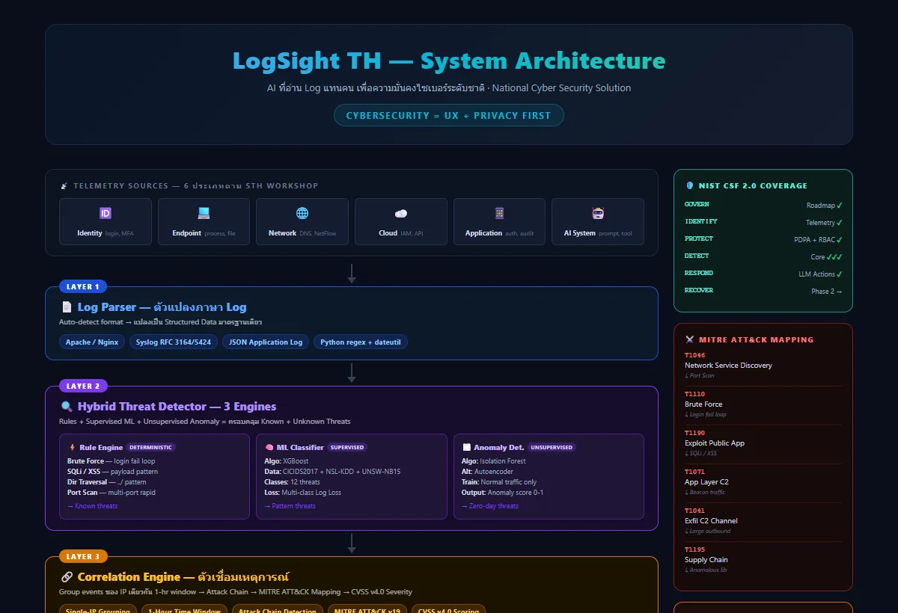
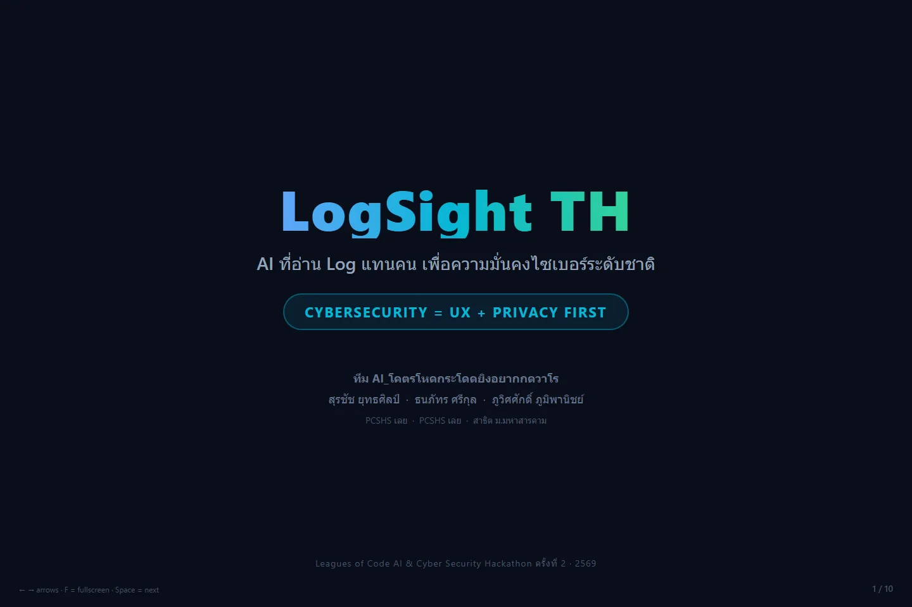

PROJECT 03 / AI × CYBERSECURITY
LogSight TH
AI-assisted log analysis สำหรับหน่วยงานและโครงสร้างพื้นฐานสำคัญ
- ROLE
- OWN PROJECT
- STATUS
- PROTOTYPE
- YEAR
- 2026
- FIELD
- AI × CYBERSECURITY

แนวคิดเครื่องมือช่วยอ่าน log จำนวนมาก จัดกลุ่มเหตุการณ์ที่ควรตรวจต่อ และอธิบายเหตุผลโดยไม่แทนที่การตัดสินใจของผู้ดูแลระบบ
CONTEXT / PROBLEM
ปัญหาที่เลือกทำ
Log ของระบบมีปริมาณมากและมีบริบทเฉพาะ การใช้ AI อย่างไม่ระวังอาจสร้าง false positive หรือสรุปเหตุการณ์ผิด โครงการนี้จึงแยกชั้นการรวบรวมหลักฐาน การจัดลำดับความสำคัญ และการสรุปภาษาออกจากกัน
OWNERSHIP / CONTRIBUTION
ส่วนที่ผมรับผิดชอบ
กำหนดแนวคิด ออกแบบข้อมูลนำเข้า ลำดับการวิเคราะห์ และต้นแบบประสบการณ์ใช้งาน
- 01ออกแบบ pipeline จาก raw log ไปสู่เหตุการณ์ที่ตรวจสอบย้อนกลับได้
- 02วาง human-in-the-loop ให้ผู้ดูแลระบบเป็นผู้ตัดสินใจสุดท้าย
- 03แยกการสรุปภาษาจากกฎและหลักฐานด้านความปลอดภัย
- 04นำแนวคิดไปพัฒนาในบริบทกิจกรรม AI & Cyber Security Hackathon
SYSTEM / PROCESS
ระบบและกระบวนการ
- 01INGEST
รับ log และรักษาข้อมูลต้นฉบับสำหรับการตรวจสอบย้อนกลับ
- 02NORMALIZE
จัดรูปแบบ field และเวลาให้เปรียบเทียบเหตุการณ์ได้
- 03PRIORITIZE
ใช้กฎและสัญญาณช่วยจัดลำดับรายการที่ควรตรวจ
- 04REVIEW
แสดงเหตุผลและข้อมูลต้นทางให้มนุษย์ตรวจสอบก่อนดำเนินการ
VALIDATION / WHAT THE EVIDENCE SAYS
สิ่งที่ยืนยันได้ในตอนนี้
หลักฐานที่ยืนยันได้ในขณะนี้คือการเข้าร่วม 2nd Leagues of Code AI & Cyber Security Hackathon; ไม่อ้างว่าได้รับรางวัลจากกิจกรรมดังกล่าว
EVIDENCE TYPES
LIMITATIONS / NEXT QUESTIONS
ข้อจำกัดที่ไม่ซ่อน
- ยังต้องทดสอบกับ log ที่หลากหลายและกำหนด baseline
- LLM ไม่ควรถูกใช้เป็นแหล่งข้อเท็จจริงด้าน security โดยลำพัง
- ข้อมูล log อาจมีข้อมูลอ่อนไหวและต้องมีนโยบาย retention/access control
EVIDENCE / VISUAL RECORD
หลักฐานที่ใช้ตรวจสอบ
